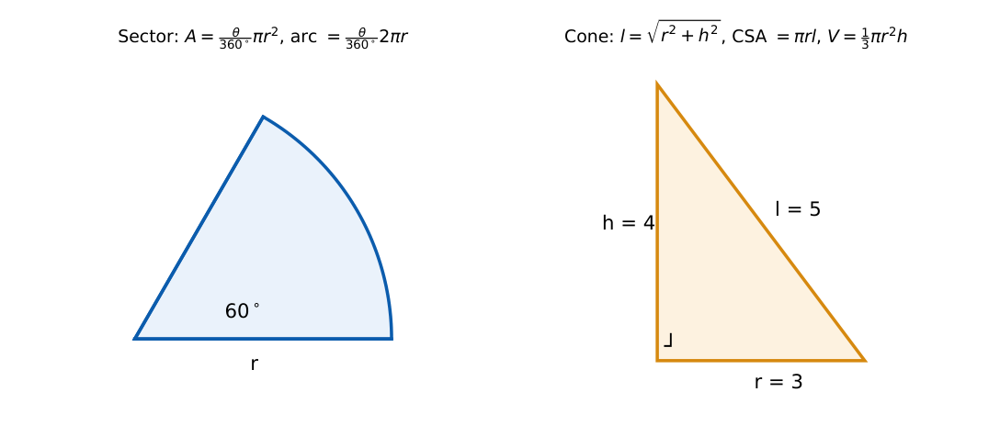

Mensuration
In this chapter
Areas and perimeters of plane figures, surface areas and volumes of the cube, cuboid, cylinder, cone and sphere, recasting (melting) problems and Heron’s formula. Memorise the formulas; the arithmetic is light.
6.1 Plane figures
Rectangle: \(A=lb\), \(P=2(l+b)\), diagonal \(\sqrt{l^2+b^2}\). Square: \(A=a^2\), diagonal \(a\sqrt2\).
Triangle: \(A=\frac12bh\); Heron: \(A=\sqrt{s(s-a)(s-b)(s-c)}\), \(s=\frac{a+b+c}2\); equilateral \(A=\frac{\sqrt3}4a^2\); right triangle \(A=\frac12\times\) legs, \(c^2=a^2+b^2\) (triples \(3,4,5\); \(5,12,13\); \(8,15,17\)).
Parallelogram \(A=bh\); rhombus \(A=\frac12d_1d_2\); trapezium \(A=\frac12(a+b)h\).
Circle: \(A=\pi r^2\), circumference \(2\pi r\). Sector (angle \(\theta\)): \(A=\frac\theta{360^\circ}\pi r^2\), arc \(=\frac\theta{360^\circ}2\pi r\). Regular hexagon: \(A=\frac{3\sqrt3}2a^2\).

For a fixed perimeter the rectangle of maximum area is a square; for a fixed area a circle has the least perimeter. Similar figures: areas scale as the square of the length ratio, volumes as the cube.
6.2 Solids
| Solid | Surface area | Volume |
|---|---|---|
| Cube (side \(a\)) | \(6a^2\) (diagonal \(a\sqrt3\)) | \(a^3\) |
| Cuboid (\(l,b,h\)) | \(2(lb+bh+hl)\) (diagonal \(\sqrt{l^2+b^2+h^2}\)) | \(lbh\) |
| Cylinder | curved \(2\pi rh\); total \(2\pi r(r+h)\) | \(\pi r^2h\) |
| Cone (\(l=\sqrt{r^2+h^2}\)) | curved \(\pi rl\); total \(\pi r(r+l)\) | \(\frac13\pi r^2h\) |
| Sphere | \(4\pi r^2\) | \(\frac43\pi r^3\) |
| Hemisphere | curved \(2\pi r^2\); total \(3\pi r^2\) | \(\frac23\pi r^3\) |
Recasting. When a solid is melted and recast, the volume is conserved. A sphere of radius \(3\) (\(V=36\pi\)) recast into a cylinder of radius \(2\) gives height \(h=\frac{36\pi}{4\pi}=9\). The number of small spheres of radius \(r\) from a big sphere of radius \(R\) is \((R/r)^3\).
Cone with \(r=3\), \(h=4\): \(l=5\), curved surface \(=\pi\cdot3\cdot5=15\pi\), volume \(=\frac13\pi\cdot9\cdot4=12\pi\). Triangle with sides \(13,14,15\): \(s=21\), \(A=\sqrt{21\cdot8\cdot7\cdot6}=84\).
(i) Slant height \(l\), not height \(h\), enters the curved surface of a cone. (ii) Volume is conserved in recasting, not surface area. (iii) Doubling every dimension multiplies area by \(4\) and volume by \(8\). (iv) Cylinder total area has two end circles. (v) Use consistent units (cm\({}^2\) versus m\({}^2\)).
Memorise Pythagorean triples to skip square roots. For percentage change in area or volume use \((1\pm r)^2\) and \((1\pm r)^3\). For recasting equate volumes and cancel \(\pi\). For maximum area under a fixed perimeter think square.
6.3 GATE problems
Q1. The area of a right triangle with sides \(3,4,5\) is (A) 5 (B) 6 (C) 10 (D) 12.
Q2. The area of a circle of radius \(7\) (take \(\pi=22/7\)) is (A) 44 (B) 49 (C) 154 (D) 308.
Q3. The volume of a cube of side \(3\) is (A) 9 (B) 18 (C) 27 (D) 54.
Q4. The diagonal of a cuboid with edges \(3,4,12\) is (A) 13 (B) 19 (C) 17 (D) 15.
Answers: Q1 (B). Q2 (C). Q3 (C). Q4 (A): \(\sqrt{9+16+144}=13\).
Q5. A solid sphere of radius \(3\) is melted and recast into a cylinder of radius \(2\). The cylinder’s height is (A) 6 (B) 9 (C) 12 (D) 4.5.
Q6. A cone has radius \(3\) and height \(4\). Its curved surface area and volume are (A) \(15\pi\), \(12\pi\) (B) \(12\pi\), \(15\pi\) (C) \(20\pi\), \(12\pi\) (D) \(15\pi\), \(36\pi\).
Q7. The area of a triangle with sides \(13,14,15\) is (A) 84 (B) 91 (C) 42 (D) 65.
Answers: Q5 (B). Q6 (A). Q7 (A).
Q8. The maximum area (two decimals) of a rectangle with perimeter \(30\) is .
Q9. Area (two decimals) of a sector of radius \(6\) and angle \(60^\circ\): .
Q10. Volume of a cube whose diagonal is \(6\sqrt3\): .
Answers: Q8: square of side \(7.5\), \(56.25\). Q9: \(6\pi=18.85\). Q10: side \(6\), \(216\).
Q11. Which are correct? (A) Curved area of a cylinder \(=2\pi rh\) (B) Sphere volume \(=\frac43\pi r^3\) (C) Cone volume \(=\pi r^2h\) (D) Sphere surface area \(=4\pi r^2\).
Answers: Q11: (A), (B), (D).
T1. If all dimensions of a cube double, by what factor does the volume grow? T2. Area of an equilateral triangle of side \(2\)? T3. Perimeter of a semicircle of radius \(r\)?
Answers: T1: 8. T2: \(\sqrt3\). T3: \(\pi r+2r\).
- Triangle \(\frac12bh\), Heron, equilateral \(\frac{\sqrt3}4a^2\); circle \(\pi r^2\), \(2\pi r\); sector \(\frac\theta{360}\) of the circle.
- Cube \(6a^2,a^3\); cylinder \(2\pi r(r+h),\pi r^2h\); cone \(\pi r(r+l),\frac13\pi r^2h\); sphere \(4\pi r^2,\frac43\pi r^3\).
- Recasting conserves volume; scale factor \(k\): area \(k^2\), volume \(k^3\).